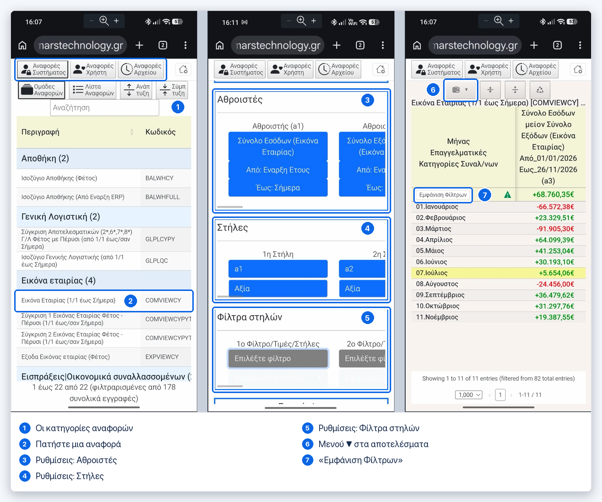

Σύνδεσμοι, σελιδοδείκτες και κινητό
Κάθε αναφορά έχει τον δικό της σύνδεσμο. Βάλτε τον σε σελιδοδείκτη, στείλτε τον σε συνάδελφο ή κάντε τον εικονίδιο στην αρχική οθόνη του κινητού σας.
Τι κάνει#
Από το μενού ▼ των αποτελεσμάτων αντιγράφετε τέσσερις διαφορετικούς συνδέσμους:
| Επιλογή | Τι ανοίγει ο σύνδεσμος |
|---|---|
| Αντιγραφή Link Νέας αναφοράς | Τρέχει την αναφορά από την αρχή, με τα δεδομένα της στιγμής που πατάτε τον σύνδεσμο |
| Αντιγραφή Link Νέας αναφοράς με οριακή ημερομηνία | Τρέχει νέα αναφορά κρατώντας την ίδια οριακή ημ/νία με αυτήν που βλέπετε |
| Αντιγραφή Link Υφιστάμενης αναφοράς | Ανοίγει αυτή ακριβώς την εκτέλεση, με τα αποθηκευμένα νούμερα (από την επόμενη ημέρα, μόνο τα σύνολα) |
| Αντιγραφή Link Ρυθμίσεων | Ανοίγει τις ρυθμίσεις της αναφοράς |
Το MARS ανοίγει και στο κινητό, μέσα από τον browser. Μπορείτε να το προσθέσετε στην αρχική οθόνη σαν εφαρμογή.
Πότε το χρησιμοποιώ#
- Κάθε πρωί θέλετε τις χθεσινές πωλήσεις με ένα πάτημα. Αντιγράφετε το Link Νέας αναφοράς και το βάζετε σελιδοδείκτη ή εικονίδιο στο κινητό.
- Θέλετε να δείξετε σε συνάδελφο μια συγκεκριμένη εκτέλεση. Του στέλνετε το Link Υφιστάμενης αναφοράς. Βλέπει ό,τι του επιτρέπουν τα δικά του δικαιώματα: αν του λείπει κάποιος αθροιστής, η αναφορά δεν εμφανίζεται, και αν έχει φίλτρα σε αθροιστές, τα αποτελέσματα βγαίνουν με αυτά.
Βήματα#
Σελιδοδείκτης στον υπολογιστή#
- Τρέξτε την αναφορά.
- Μενού ▼ → Αντιγραφή Link Νέας αναφοράς.
- Δημιουργήστε σελιδοδείκτη στον browser και επικολλήστε τον σύνδεσμο ως διεύθυνση.
Εικονίδιο στην αρχική οθόνη του κινητού#
- Ανοίξτε τον σύνδεσμο της αναφοράς στον browser του κινητού και συνδεθείτε.
- iPhone (Safari): πατήστε το κουμπί κοινής χρήσης → Προσθήκη στην οθόνη Αφετηρίας.
- Android (Chrome): πατήστε το μενού ⋮ → Προσθήκη στην αρχική οθόνη.
- Δώστε ένα όνομα (π.χ. «Πωλήσεις σήμερα») και επιβεβαιώστε.

Συμβουλές και συχνά λάθη#
- Ο σύνδεσμος δεν παρακάμπτει τα δικαιώματα. Όποιος τον ανοίξει πρέπει να έχει λογαριασμό και πρόσβαση στην εγκατάσταση. Κάθε χρήστης βλέπει τα δεδομένα που του επιτρέπονται.
- Ζητά κωδικό κάθε φορά στο κινητό; Βεβαιωθείτε ότι το Να με θυμάσαι μένει τσεκαρισμένο στην είσοδο.
- Και η λίστα αναφορών έχει σύνδεσμο. Η κατηγορία και η ομαδοποίηση που διαλέγετε γράφονται στη διεύθυνση, οπότε μπαίνει κι αυτή σε σελιδοδείκτη.
- Το όνομα του εικονιδίου το δίνετε εσείς στο βήμα 4. Το προεπιλεγμένο όνομα είναι MARS.
Σας βοήθησε αυτό το άρθρο;